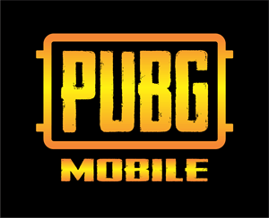
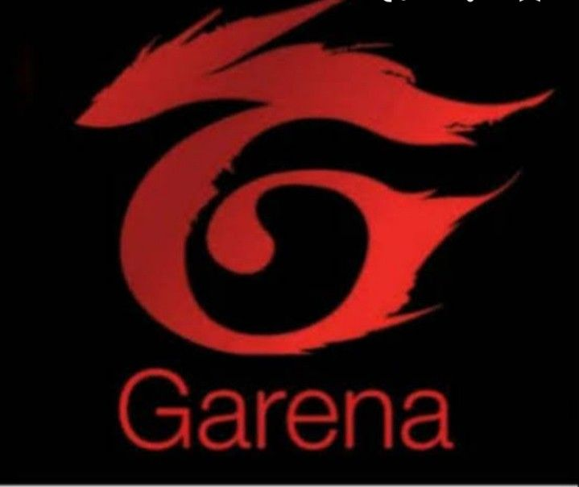

1.mobile legends

karena di game mobile legend terdapat Grafis berkualitas tinggi dan desain karakter yang kreatif membuat Mobile Legends menonjol di antara game mobile lainnya. Pahlawan-pahlawan dengan tampilan unik dan kekuatan khas menciptakan daya tarik visual yang kuat, menjadikan pengalaman bermain lebih menarik, dan memberikan identitas kuat bagi setiap karakter.dan mobile legend dapat di mainkan di berbagai kalangan baik anak anak hingga orang dewasa.
2.PUBG mobile
karena Aspek gamenya yang menarik, grafik realistis, dan sensasi format battle royale menarik beragam penonton . PUBG Mobile menciptakan komunitas gamer yang terhubung, berkompetisi, dan membentuk aliansi dalam medan pertempuran virtual.dan permainan yang cukup lama membuat PUBG semakin menarik perhatian banyak orang
3.free fire
Free Fire pasti jadi salah satu game yang nggak asing didengar. Game ini jadi salah satu game battle royale paling populer di dunia saat ini, alasan utama kenapa game fre fire populer adalah karena game murah dapat di mainkan di device rendah.